고객님 혼자, 미리
① 설치 준비
1. 준비물과 전체 흐름
준비물
- PC (윈도우·맥 상관없음) 와 크롬 같은 웹 브라우저
- 휴대폰 (AWS 가입 인증, 로그인 보안용)
- 해외 결제가 되는 신용카드 또는 체크카드 (AWS 가입에 필요)
- 디스코드 계정과, 친구들과 쓰는 디스코드 서버 (내가 만든 서버 또는 관리 권한이 있는 서버)
흐름 (처음 한 번, 1~2시간)
- AWS 가입 → 요금 알림 걸기
- 디스코드에서 관리자 역할·알림 채널·봇 만들기 → 값 몇 개 메모
- 판매자와 화면 공유로 설치 (20~30분)
- 디스코드에서
/서버켜기→ 게임 접속
메모할 값 (4~7절에서 하나씩 나옵니다. 메모장에 적어 두세요 — 판매자에게 보내지 말고, 설치 때 직접 붙여넣습니다)
2. AWS 가입과 요금 플랜
2-1. 가입
- https://aws.amazon.com 에서 AWS 계정 생성 → 이메일·비밀번호·카드·휴대폰 인증 (아래 순서대로)
- 가입 첫 화면 아래쪽의 Continue with advanced features 를 누릅니다 (위쪽 Google·이메일 버튼이 아님)
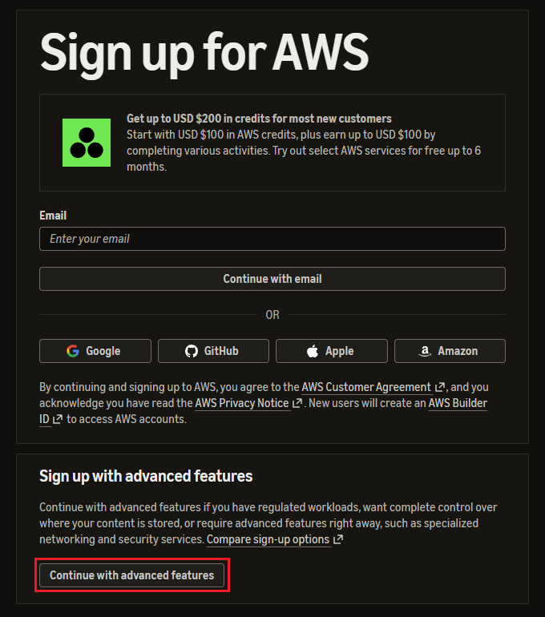
사진 19: 가입 첫 화면의 Continue with advanced features 버튼 - 루트 사용자 이메일과 계정 이름을 입력 → Verify email address
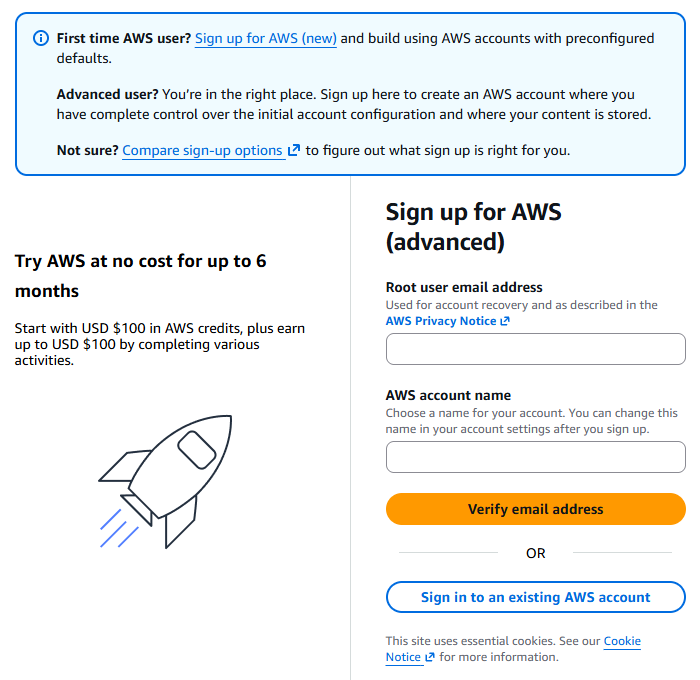
사진 20: 루트 사용자 이메일·계정 이름 입력칸 - 메일로 온 인증 코드를 입력 → Verify
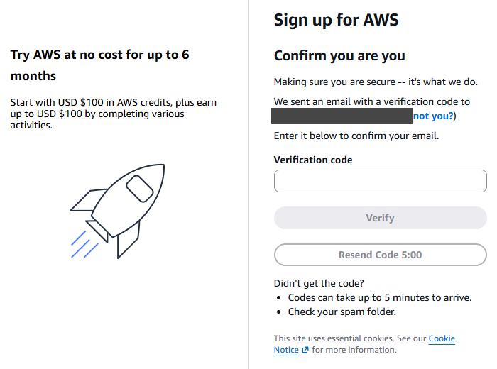
사진 21: 이메일 인증 코드 입력칸 - 루트 사용자 비밀번호를 두 번 입력 → Continue
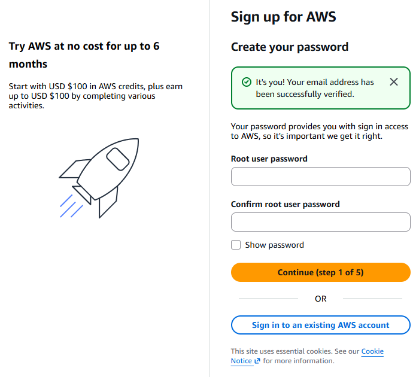
사진 22: 루트 사용자 비밀번호 설정 - 계정 플랜에서 무료 플랜 선택 (무료·유료 플랜 차이는 2-2)
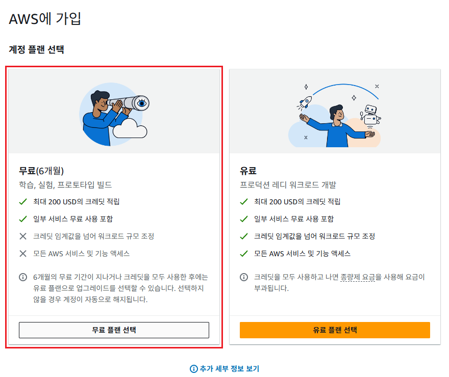
사진 23: 계정 플랜 선택 — 무료 플랜 - 연락처 정보: 국가 코드를 +82 (대한민국) 으로, 국가 또는 리전을 대한민국으로 바꾼 뒤 주소 입력
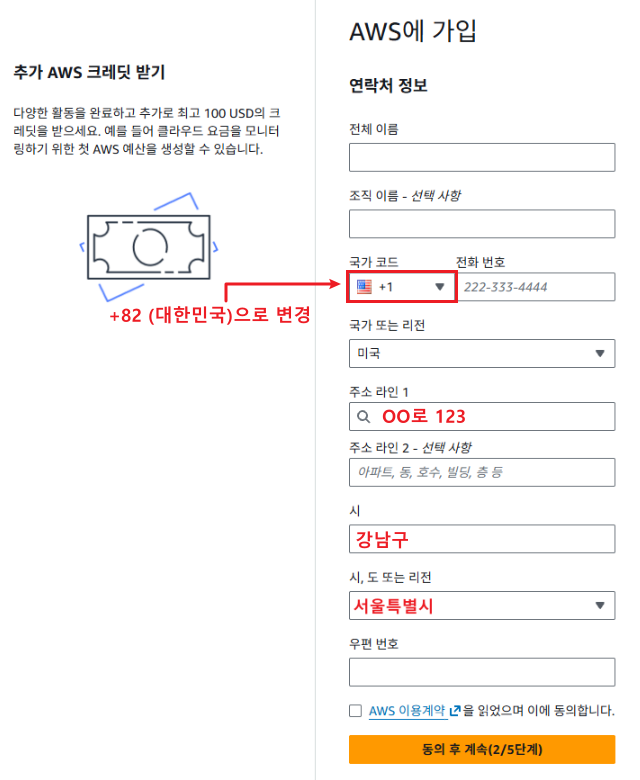
사진 24: 연락처 정보 — 국가 코드·국가·주소 칸 - 결제 정보에 카드 등록 → 휴대폰 문자 인증 → 지원 플랜은 기본 지원 - 무료
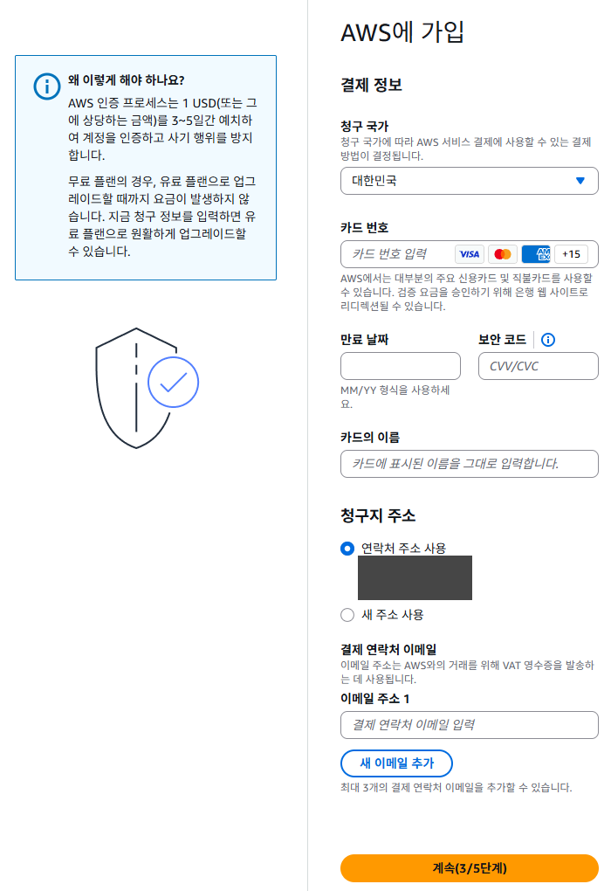
사진 25: 결제 정보 — 카드 등록 화면
- 가입 첫 화면 아래쪽의 Continue with advanced features 를 누릅니다 (위쪽 Google·이메일 버튼이 아님)
- 가입이 끝나면 로그인 화면에서 루트 사용자로 로그인합니다
자세히 보기
- 루트 사용자 — 가입한 이메일로 들어가는 계정 주인 계정. 이 서비스는 이 계정으로 설치합니다
- MFA(2단계 인증) 켜기: 휴대폰 인증 앱(Google Authenticator 등)으로 등록 (아래 순서대로)
- 비밀번호가 새어도 휴대폰 없이는 로그인할 수 없게 해 줍니다. 꼭 켜 주세요
- 오른쪽 위 계정 이름 → 보안 자격 증명
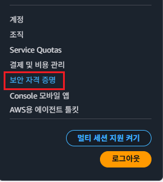
사진 26: 계정 메뉴의 보안 자격 증명 - MFA 디바이스 할당
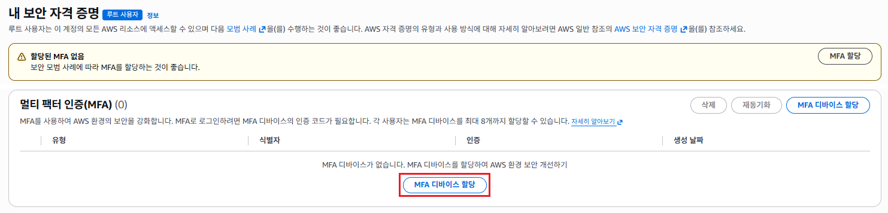
사진 27: 내 보안 자격 증명 화면의 MFA 디바이스 할당 버튼 - 디바이스 이름(예:
Phone) 입력 → 인증 관리자 앱 선택 → Next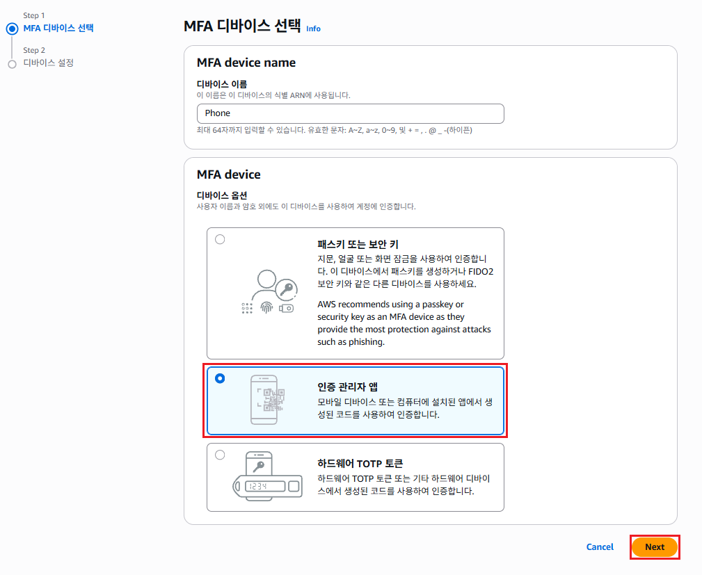
사진 28: MFA 디바이스 선택 — 인증 관리자 앱 - 휴대폰에 인증 앱 설치 → 코드 추가 → QR 코드 스캔 으로 컴퓨터 화면의 QR 코드(QR 코드 표시 누르기)를 찍습니다. QR 코드는 다른 사람에게 보여 주지 마세요
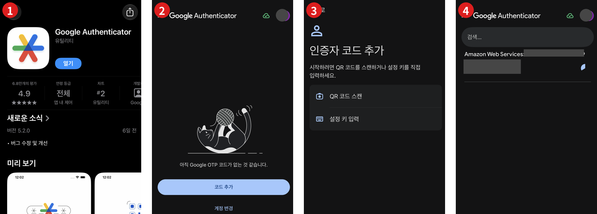
사진 29: 휴대폰 인증 앱에서 QR 코드 스캔 - 앱에 뜬 6자리 코드를 첫 칸에, 30초 기다려 바뀐 코드를 둘째 칸에 입력 → MFA 추가
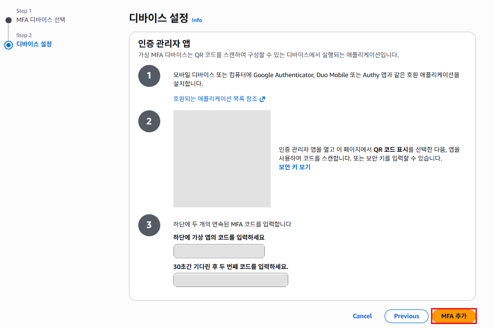
사진 30: MFA 코드 두 개 입력칸과 MFA 추가 버튼 - "MFA 디바이스 할당됨" 이 뜨면 끝
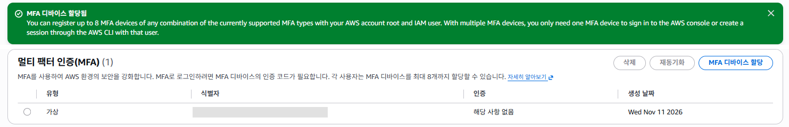
사진 31: MFA 디바이스 할당 완료
- 리전을 서울로: 화면 오른쪽 위 지역 메뉴 → 아시아 태평양(서울)
- 리전 — AWS 컴퓨터가 있는 지역. 서울을 골라야 접속이 빠릅니다
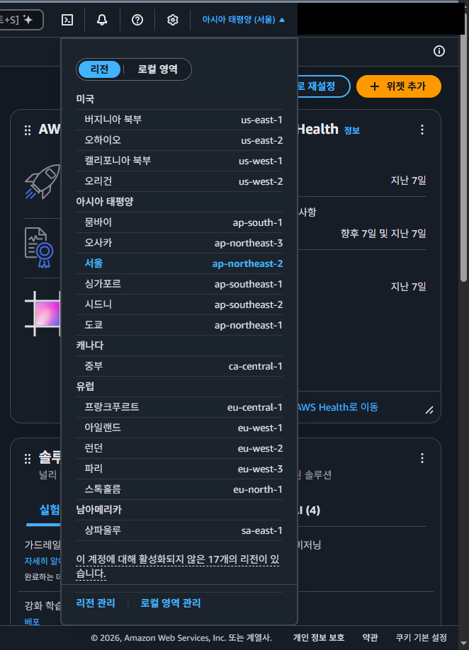
사진 01: AWS 화면 오른쪽 위 리전 메뉴에서 서울 고르기
2-2. 무료 플랜과 유료 플랜 (Paid Plan) → ④ 요금·주의사항
3. 요금 알림 걸기 (꼭 해 주세요)
생각보다 요금이 많이 나오면 이메일로 알려 주는 설정입니다.
- AWS 위 검색창에 Budgets (한국어 화면은 "예산") → 예산 생성
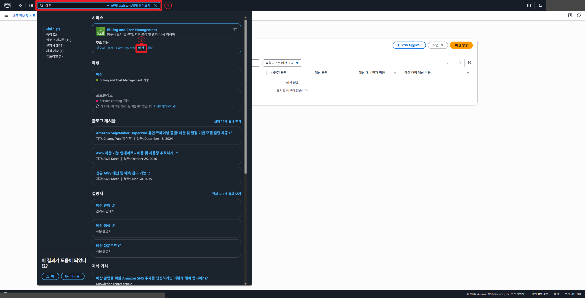
사진 32: 검색창에서 예산 찾기 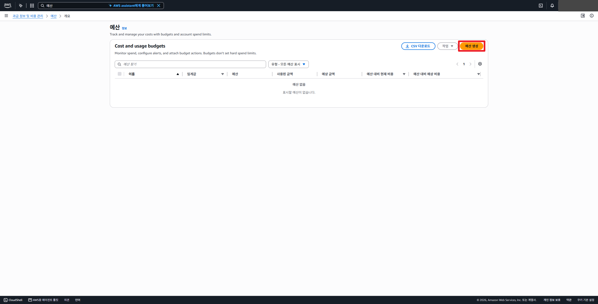
사진 33: 예산 화면의 예산 생성 버튼 - "월별 비용 예산" 템플릿 → 금액 입력 (예: $10, 또는 $20) → 알림 받을 이메일 입력 → 생성
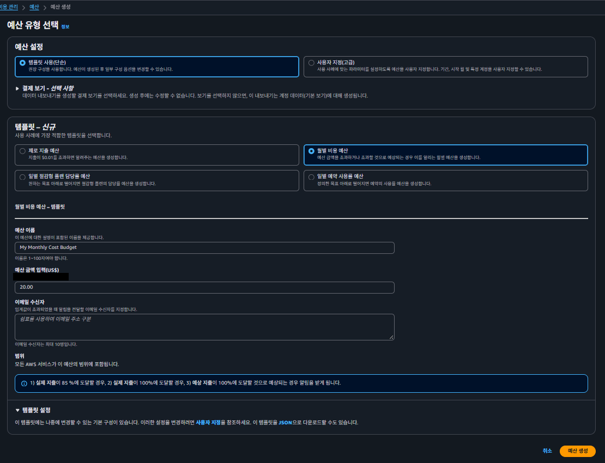
사진 02: 예산 만들기 화면 — 금액·알림 기준·이메일 칸 - 만든 뒤 예산 이름을 눌러 Email verification 의 상태가 Verified 인지 확인하세요. Pending 이면 받은 메일의 Verify email 을 누르세요 (인증 전에는 알림 메일이 오지 않습니다)
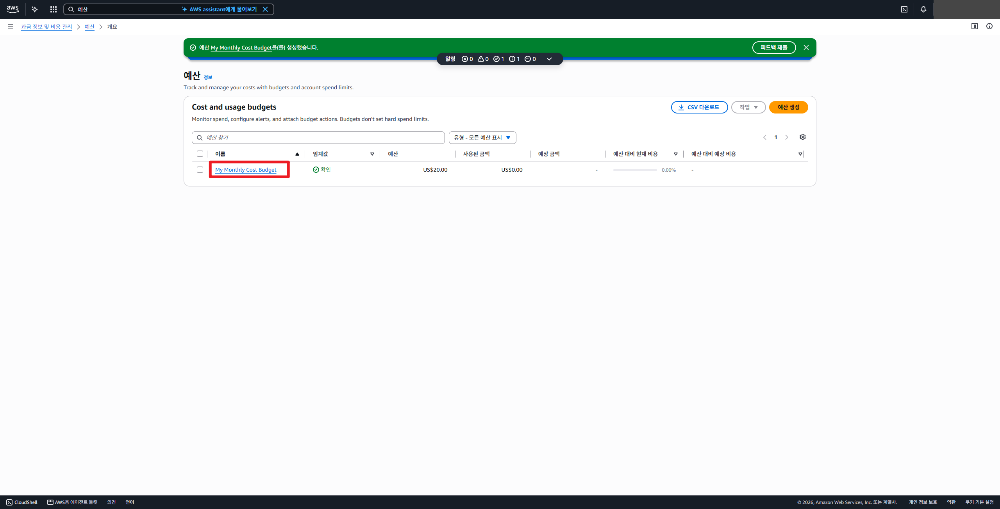
사진 34: 예산 목록 — 만든 예산 이름 (My Monthly Cost Budget) 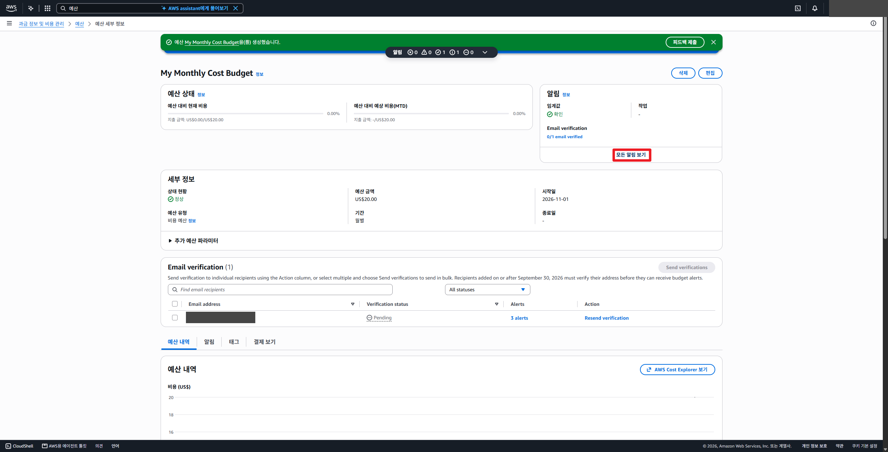
사진 35: 예산 상세 화면 — 인증 전(Pending) 예시. 상태는 화면 아래쪽 Email verification 표의 Verification status 칸에 나옵니다 (빨간 상자는 '모든 알림 보기' 버튼). 메일의 Verify email 을 누르면 Verified 로 바뀝니다 - 금액을 넘기면 이메일이 옵니다. 그럴 땐 디스코드에서
/상태로 서버가 켜져 있는지 확인하고, 이상하면 판매자에게 문의하세요
4. 디스코드 서버 준비 — 서버 ID, 관리자 역할
4-1. 개발자 모드 켜고 서버 ID 복사
- 개발자 모드 — 디스코드에서 서버·역할 등의 ID(고유 번호)를 복사할 수 있게 해 주는 설정
- 디스코드 왼쪽 아래 톱니바퀴(사용자 설정) → 고급 → 개발자 모드 켜기
- 왼쪽 서버 목록에서 내 서버 아이콘 우클릭 → 서버 ID 복사 → 메모장에 붙여넣기
자세히 보기
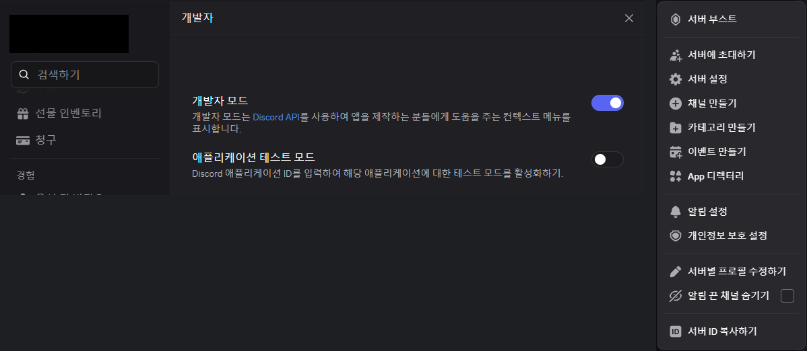
사진 03: 개발자 모드 스위치 / 서버 우클릭 메뉴의 "서버 ID 복사"
4-2. 관리자 역할 만들기 → 나와 친구에게 주기 → 역할 ID 복사
서버 켜기·끄기·설정 바꾸기는 이 역할을 가진 사람만 할 수 있습니다. /상태 와 /설정 보기 는 누구나 됩니다.
- 역할 만들기: 서버 이름 클릭 → 서버 설정 → 역할 → 역할 만들기 → 이름 입력 (예:
서버관리) → 변경 사항 저장- 디스코드의 "관리자" 권한을 켤 필요는 없습니다. 봇은 이 역할을 가졌는지만 봅니다
자세히 보기
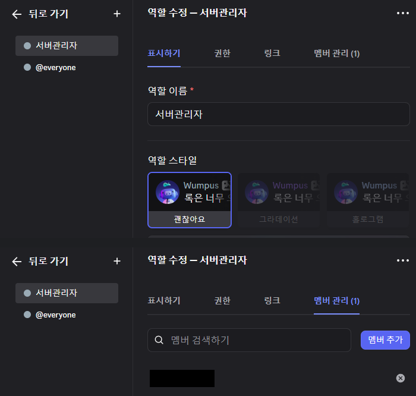
사진 16: 서버 설정 → 역할 → 역할 만들기 / 멤버 관리 탭의 멤버 추가 - 역할 주기: 같은 화면의 멤버 관리 탭 → 멤버 추가 → 나 자신과, 서버를 켜고 끌 친구를 고르기
- 나중에 다른 친구에게 줄 때: 친구 이름 우클릭 → 역할 →
서버관리체크
- 나중에 다른 친구에게 줄 때: 친구 이름 우클릭 → 역할 →
- 역할 ID 복사: 역할 목록에서
서버관리우클릭 → 역할 ID 복사 → 메모장에 붙여넣기자세히 보기
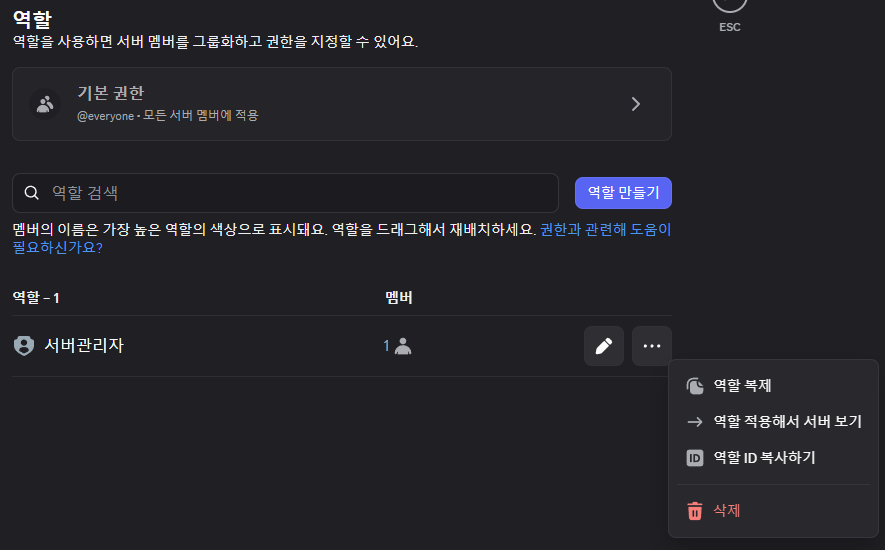
사진 04: 역할 우클릭 메뉴의 "역할 ID 복사"
5. 알림 채널과 웹후크
서버가 켜지면 접속 주소를, 꺼지면 이유를 알려 주는 알림 채널을 만듭니다.
- 웹후크 — 다른 프로그램이 디스코드 채널에 메시지를 올릴 수 있게 하는 주소. 이 주소를 아는 사람은 누구나 그 채널에 글을 올릴 수 있으니 비밀번호처럼 다뤄 주세요
- 알림을 받을 채널을 고르거나 새로 만들기 (예:
#서버-알림) - 채널 이름 옆 톱니바퀴(채널 편집) → 연동 → 웹후크 → 새 웹후크
- 이름을 바꿔 주세요 (기본 이름은 "Captain Hook" — 예:
서버 알림이), 원하면 아이콘도 바꾸기 - 웹후크 URL 복사 → 메모장에 붙여넣기 (화면 캡처·채팅에 올리지 마세요)
자세히 보기
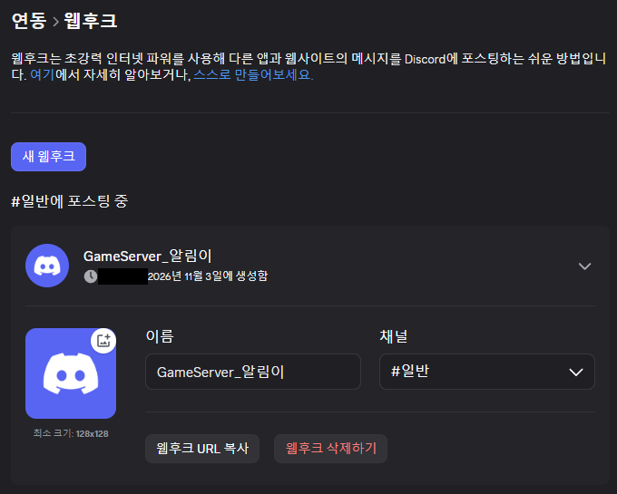
사진 05: 채널 편집 → 연동 → 웹후크 — 새 웹후크 버튼, 이름, URL 복사 버튼
6. 디스코드 봇 만들기
/서버켜기 같은 명령을 받는 봇을 내 디스코드 계정에 만듭니다. 내 계정에 있으니 판매자 없이도 계속 쓸 수 있습니다.
- https://discord.com/developers/applications 접속 (디스코드 계정으로 로그인)
- 오른쪽 위 New Application → 이름 입력 (예:
우리서버봇) → 약관 동의 → Create - 일반 정보 (General Information) 화면에서 두 값을 복사해 메모장에:
- 애플리케이션 ID (Application ID) (숫자)
- 퍼블릭 키 (Public Key) (영문·숫자 64자)
자세히 보기
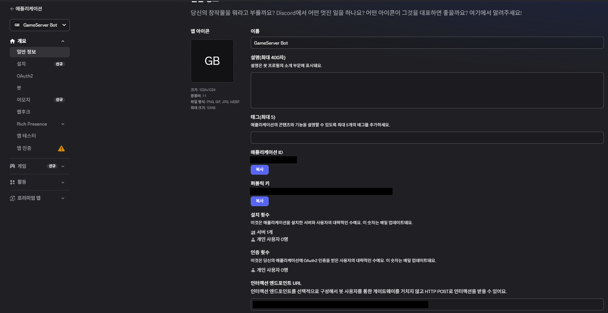
사진 06: 일반 정보 (General Information) — 애플리케이션 ID, 퍼블릭 키, 인터랙션 엔드포인트 URL 칸 - 아래쪽 인터랙션 엔드포인트 URL (Interactions Endpoint URL) 칸은 지금은 비워 둡니다 (9절에서 채움)
7. 봇을 내 디스코드 서버에 초대
- 같은 개발자 페이지 왼쪽 OAuth2 → OAuth2 URL 재생기 (URL Generator)
- 스코프 (SCOPES) 에서
applications.commands하나만 체크 (bot은 체크하지 않음 — 체크하면 "봇 권한" 목록이 나오는데, 관리자 등 권한을 줄 필요가 없음) - 맨 아래 생성된 URL 오른쪽 복사 버튼 → 새 탭에 붙여넣기 → 내 서버 고르기 → 승인
자세히 보기
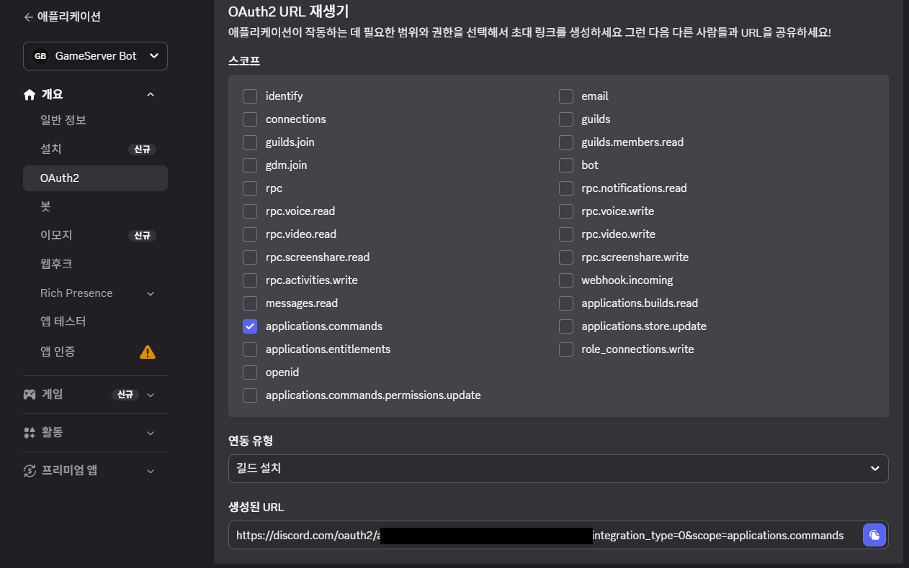
사진 07: OAuth2 → OAuth2 URL 재생기 (URL Generator) — 스코프에서 applications.commands 만 체크, "생성된 URL" 복사 버튼 - 승인하면 끝. 멤버 목록에 봇이 보이지 않아도 정상이며, 명령은 9절 등록 뒤에 보입니다